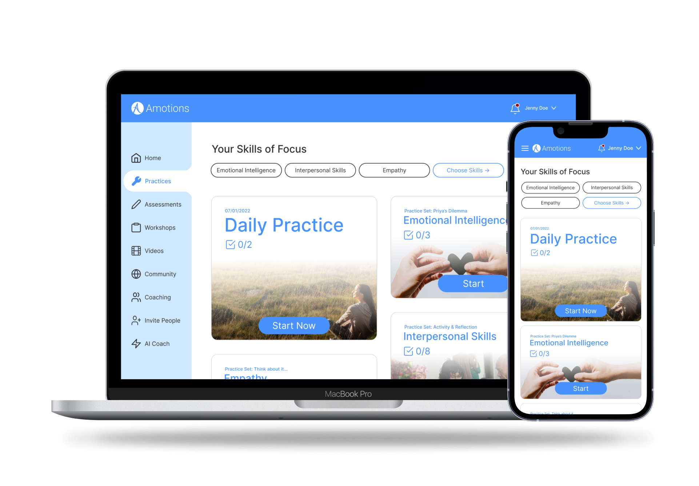

Jump To:
Amotions is an early-stage startup. My responsibility was designing the skill practice userflow. During the process, I solved design challenges and team feedback obstacles.
Figma
Apr - Sept 2022 (6 Months)
Amotions offers managers and their teams soft-skill coaching from world-class experts. Currently, the company has 1000+ paying and interested customers and 15+ world-class coaches. The company is primed for success because, according to PRNewswire, the skill-learning industry is rapidly growing.
Amotions wants to develop a dashboard where people can learn skills, receive coaching, watch educational content, and track progress because they want to offer customers a personalized experience.
To understand the customer base better, information such as the product spec and research notes needed to be analyzed.

The research notes are blurred to protect the interviewees' identities.
I qualitatively coded the research notes and created a persona that reflected the research. Additionally, this step came in handy when I had to visualize a journey map that simulated the customer’s experience.

The flow diagram starts when the user enters the practice home page and ends when the user doesn’t require the services of the feature anymore. The core functionalities of the flow include:

I designed based on the requirements and referenced the Canvas and Gmail dashboards for inspiration. I focused mainly on the practice home page because it was the access point of the whole flow.

When I presented my version one to the team, I had objections, and after spending the whole meeting defending my design choices, I ultimately had to change the design. Versions two and three had the same outcome, and I felt lost.

Before designing, I welcomed team feedback on my designs so I could iterate. Yet, I gave no thought to what I meant by feedback.
I thought statements like: “I think that’s awkward” or “It needs to look better” was good feedback, but assuming what my team wanted and addressing those statements led me on wild tangents. As a result, I was caught in a cycle that stalled the design.

It was the first week of July 2022. I had 3 weeks to get the team’s approval for the mockups in the practice userflow. There was pressure to finish before the deadline because the development team needed as much time before the MVP launch date as possible to finish coding everything.
I told my team that the team feedback wasn't what I had in mind. Thus, during the next feedback session, I spoke up and asked follow-up questions when I didn’t know what my teammates were trying to articulate. By doing that, I got out of the cycle!

I took the practice home screen to my team and asked for guidance. Although some pieces of advice were surface-level, it still ensured that my team and I were on the same page and could work towards a solution.

Here was the team consensus:
Because of all the design assumptions, I wanted to get our client’s thoughts on what I was designing. However, due to the company’s circumstances, that request got denied.
Although I couldn’t get access to our target demographic, I still needed to account for them. Thus, during the next team meeting, I worked with my team to walk through my mockups step-by-step using the persona I created.

Here are the critical findings from the journey map:
Customers are supposed to start with the daily practices and then transition to doing some of their chosen skills of focus. If people have time, they can browse other skills that Amotions offers.
Additionally, I kept the UI as focused as possible by using 2-3 font sizes and not overwhelming the user with too many images and interactions.


From colors and fonts to buttons and text fields, I wanted to be as comprehensive as possible because I knew Figma’s “Inspect” feature was limited. I also included an asset folder that contained relevant images and icons so the development team could focus on coding the product.

I watched the video recordings of those sessions and made a few changes based on my observations.
First observation:
Some practice sets had longer names than I expected. Because of that, people thought the screen looked messy.
Action:
I created a more flexible layout that would allow for lengthier practice set titles and a more pleasant UI.

Second observation:
People got confused as to where in the flow they were located.
Action:
I changed the fairly useless “back to [blank]” text button to breadcrumbs, which visually displays the user’s location in the flow.

Due to better product navigation, customers could view more content, prompting more interest in the company. Thus, customers were more willing to go into the app to see product updates.
By simulating the element layout on a smaller screen, I give developers insight into how the product should look and lessen their cognitive load.
Ultimately, I chose to showcase the desktop version of the product in this case study because the company knows that most people would use the platform on a desktop screen.

When I left the company in preparation for a heavy college workload, the company completed its first round of MVP iterations. There are more sessions planned in the future.
Those sessions will test the practice flow and the other features of the dashboard web app that my fellow designers created. Every round of usability testing leads to product iterations, which makes the product better and better!
As a designer, I will be participating in more design feedback sessions in the future. This experience has challenged me and given me a taste of what's to come. And I learned that I needed to be open and speak up if the feedback pushed me in the wrong direction.
Additionally, everyone on the team has a part to play, and it is my job as a designer to get everyone involved. The skill of communicating ideas to non-designers is crucial for success. By including people, I was able to improve the product.
